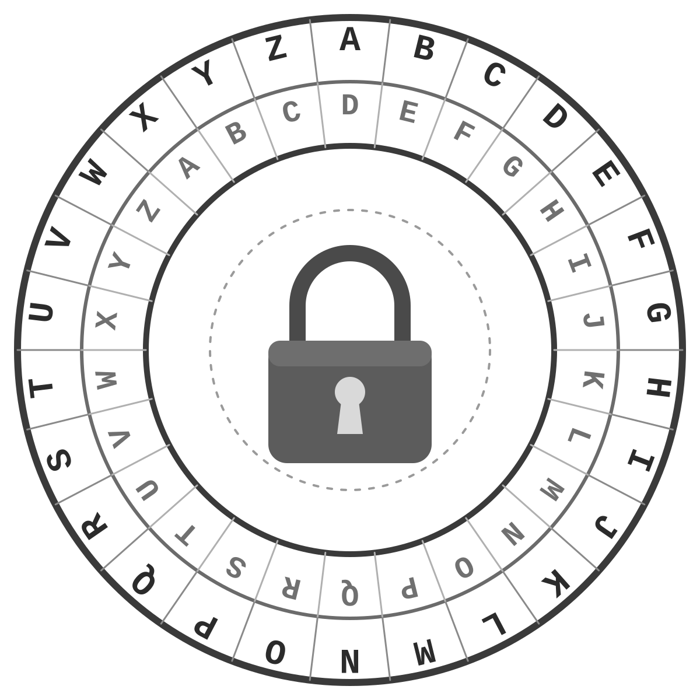

Let's Talk
Cryptography
Caesar Cipher
A Caesar Cipher is one of the simplest encryption techniques used in cryptography. It is a type of substitution cipher in which each letter in the message text is replaced by a letter shifted by certain number of positions. For example, with a left shift of 3, D would be replaced by A. The method is named after Julius Caesar, who used it in his private correspondence.
The Caesar cipher is often incorporated as part of more complex encryption algorithms, such as the Vigenère cipher. Today it is applied in the ROT13 system. As a stand-alone algorithm, Caesar cipher is not secure because it can be easily broken.
Source: WIKIPEDIA
